Choose your platform, then follow the installation guide below. Coin Master Beta 0.2 is an early build and may trigger security warnings because it is distributed outside official app stores.
01 / WINDOWS
Coin Master for Windows
Download the ZIP package, extract it, then launch coinMaster_Beta0.2.exe. Keep the matching .pck file beside the EXE.
Windows warning: Microsoft Defender SmartScreen may say “Windows protected your PC” because the beta application is not recognized by Windows reputation services. Only continue if you trust the source.
02 / ANDROID
Coin Master for Android
Download the APK and open it on your Android device. Android / Google Play Protect may recommend scanning an app installed outside Google Play.
Android warning: Play Protect can show an “App scan recommended” message for an APK it has not seen before.
03 / INSTALLATION
STEP BY STEP
1
Download Beta0.2.zip
Download the Windows ZIP from the button above.
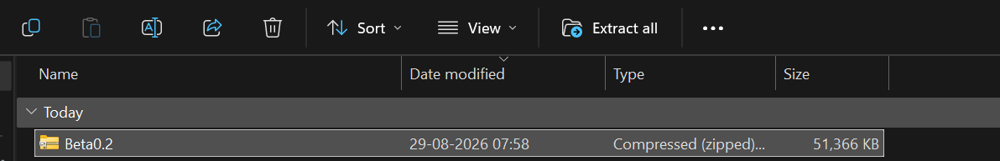
2
Extract the ZIP
Use Windows “Extract all”, choose your destination, and press Extract.
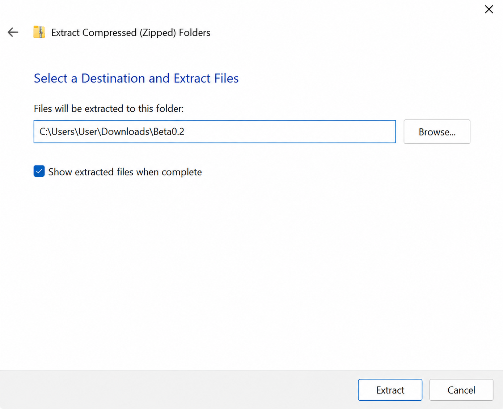
3
Open the extracted Beta0.2 folder
After extraction, open the new folder.
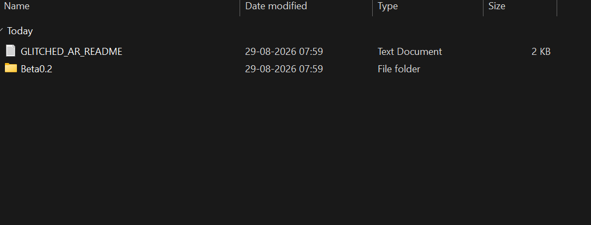
4
Run coinMaster_Beta0.2.exe
Open the application. Do not separate the EXE from its PCK file.
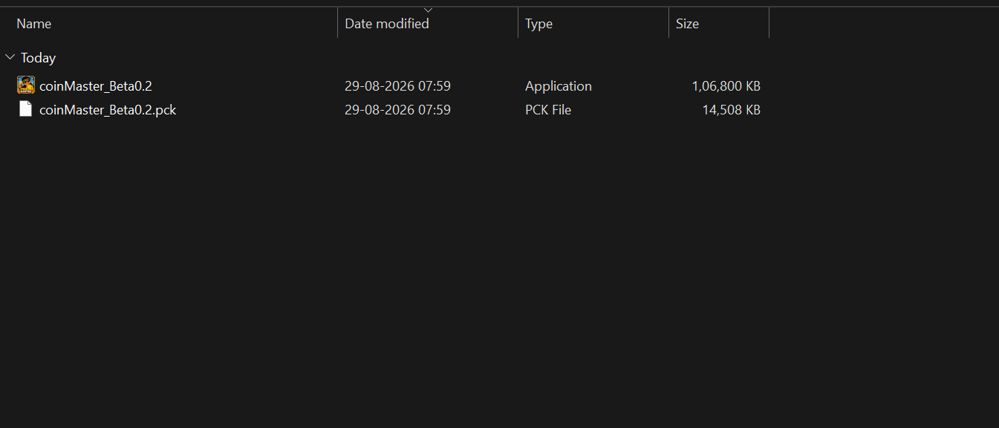
5
Windows protected your PC
If SmartScreen appears, select More info to reveal the additional option.
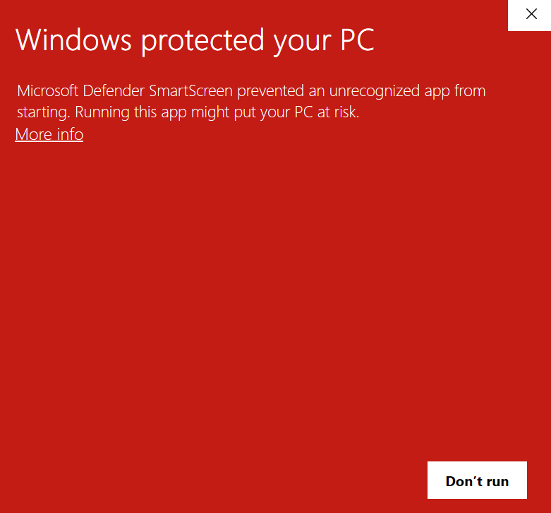
6
Select Run anyway
Only continue if you trust the source of the beta build.
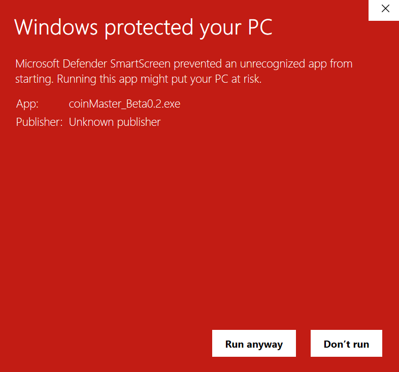
1
Download the APK
Download Coin Master Beta 0.2 and open the APK from your downloads.
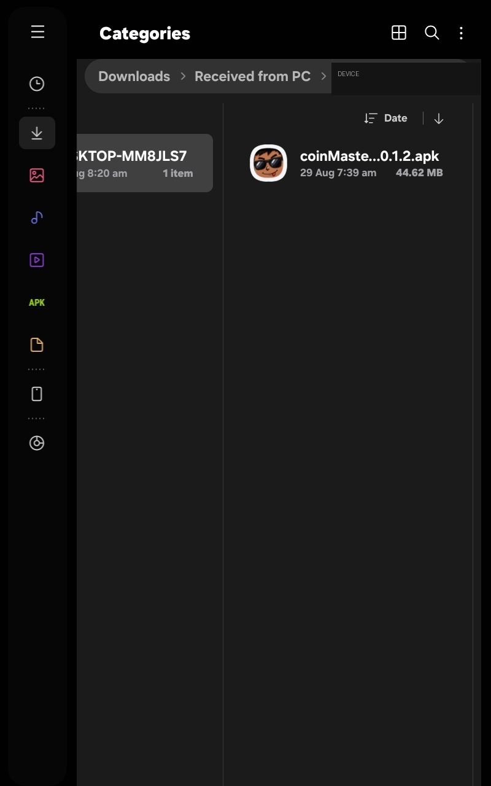
2
Play Protect scan recommendation
Android may show an “App scan recommended” prompt because the APK is new to Play Protect.
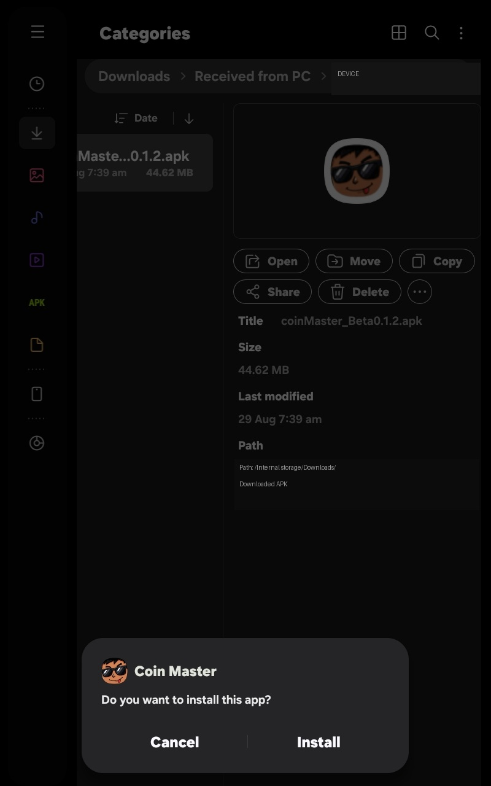
3
Review the prompt
You can choose to scan the app before continuing.
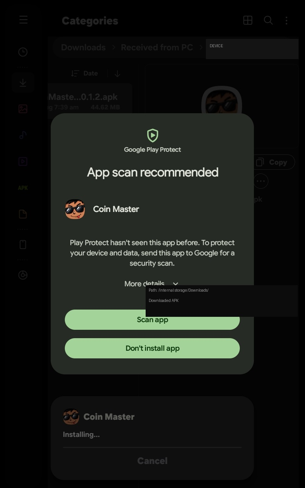
4
Tap Install
When Android asks whether you want to install Coin Master, tap Install.
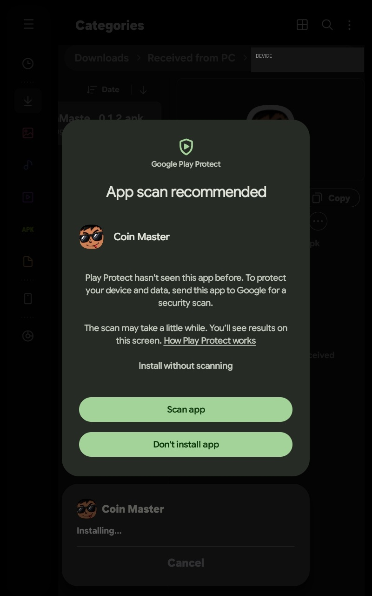
5
Open Coin Master
When installation completes, tap Open and start playing.
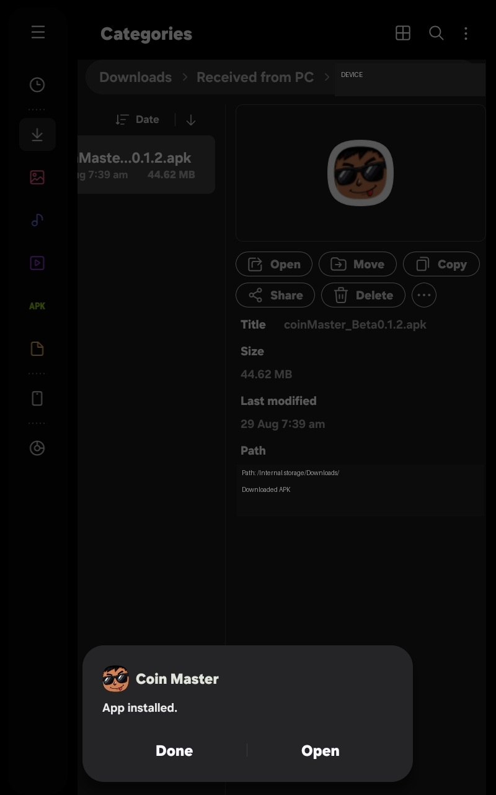
04 / FAQ
COMMON QUESTIONS
Why does Windows show “Windows protected your PC”?
SmartScreen can warn about applications that do not have an established reputation. Beta 0.2 is distributed directly rather than through the Microsoft Store.
Why does Google Play Protect recommend a scan?
Play Protect can recommend scanning APKs installed outside Google Play, especially when an app has not been seen before.
Which Windows file do I open?
Open coinMaster_Beta0.2.exe. Keep the matching .pck file in the same folder.
Is Beta 0.2 a final release?
No. It is a beta build and may contain bugs or receive changes in future versions.